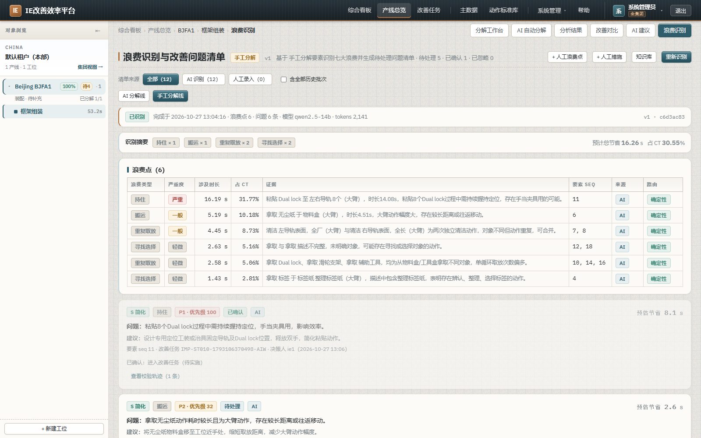
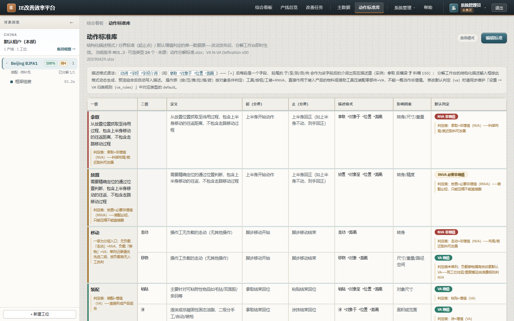
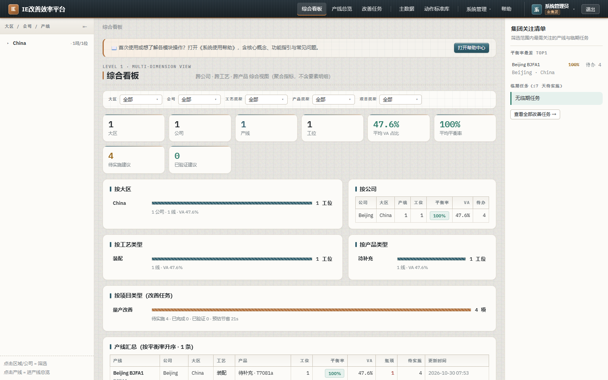
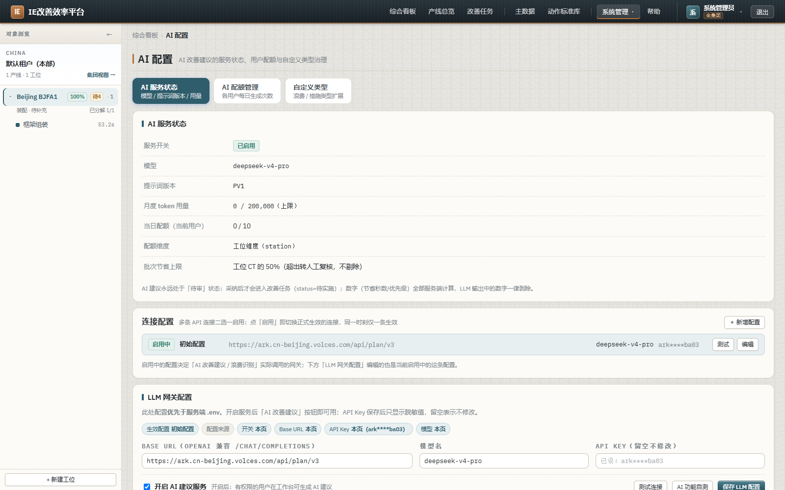

| 工作项 | 性质 | 内容 | 验证 |
|---|---|---|---|
| legacy.css 拆分 | 重构 | 1698 行的遗留样式按页面归属机械拆成 7 个分层文件，类名零变更 | 选择器 829→829 零丢失、跨文件冲突 0 |
| 裸奔类名补齐 | 缺陷修复 | 静态扫描出 16 个「JSX 在用、CSS 零定义」的类名，按柔和工业风补齐 | 截图逐页确认；新增门禁零未定义 |
| 装饰性 emoji 清零 | 规范 | ☰ / ✅ / ❌ 6 处替换为单色描边 SVG，收口到 components/Icons.tsx | tsc + build 通过；扫描仅剩注释 |
| 后端启动崩溃修复 | 阻塞级 | 2 处实体列写死 type:'boolean'，mssql 不认该类型名 → DataSource 建不起来 | API 由启动失败转为 health=200 |
| 防回归门禁 | 新增 | npm run test:css-classes：出现新的未定义类名即失败 | 当前 PASS（0 未定义） |
拆分前 src/styles/ 有 6 个文件，其中 legacy.css 独占 1698 行 / 99 KB，是全站样式的"杂物抽屉"。拆分后每个文件都有明确的页面归属：
| 文件 | 行数 | 职责 |
|---|---|---|
tokens.css | 116 | 设计令牌：柔和工业风色板 / 字体 / 尺度 / 工业纹理 / 动效 |
base.css | 275 | 基础层：重置、排版、表单、按钮、标签、表格、卡片、时间线 |
login.css | 187 | 认证层：登录 / 注册 / 找回密码 / 强制改密 |
shell.css | 326 | 外壳层：顶栏、导航、用户与权限区、三栏、对象树 |
dashboard.css | 167 | 驾驶舱层：KPI、筛选条、分布卡、横评表、上手引导 |
workbench.css | 895 | v3.60 拆出：分解工作台（视频舞台 / 传输条 / 属性检查器 / 时间线 / 交付条 / 工具箱） |
ai.css | 450 | v3.60 拆出：AI 配置 / AI 改善建议 / AI 分解 / 浪费识别 |
settings.css | 112 | v3.60 拆出：设置中心 / 动作标准配置 |
nav.css | 67 | v3.60 拆出：导航层分层（工厂 → 产线 → 工位） |
components.css | 109 | v3.60 拆出：通用自绘控件（SelectMenu 下拉 / 右键浮层 / 共享弹窗） |
diff.css | 69 | v3.60 拆出：版本对比页 |
help.css | 56 | v3.60 拆出：系统使用帮助文档页 |
UserManagementPage / RolePermissionPanel / RbacAuditPanel 三个页面已 100% 复用 base.css 通用类（card / btn / tag / field / modal / banner），legacy.css 中不存在任何 user 专有样式。因此不建空文件——这本身是一条正面结论。CSS 拆分最大的风险是块间相对顺序改变导致层叠结果变化。原 legacy.css 中页面段落是交错排列的（设置 → AI → 工作台 → 导航 → 工作台…），任何切分都无法保持原序。因此采用如下判据：
用脚本递归解析（含 @media 嵌套）全部新文件并求交集，结果：
.set-tab / .set-tab.on 在 AI 段被重复声明）→ 归入 settings.css 后归零新文件间冲突选择器: 0 SAFE：拆分不改变层叠结果 legacy.css 原始选择器数: 829 新文件选择器合计: 829 | 去重后: 829 丢失选择器数: 0
这是本轮最有价值的发现。扫描 src/ 下全部 JSX 的 className，与 styles/ 中已有定义求差集，命中 22 项，剔除 6 项动态前缀误报（banner-${kind} 等，其取值 warn/success/error 等已逐一核实有定义）后，16 个类名在 CSS 中零定义——页面靠 inline style 勉强撑着，不报错但视觉是坏的。
| 类名 | 所在页面 | 实际后果 |
|---|---|---|
aw-page / aw-section / aw-batch-bar | 浪费识别页 | 整页区块无任何语义样式 |
aw-issues / aw-issue-card | 浪费识别页 | 致命：.card 本身无外边距，相邻问题卡片零间距粘连成一片 |
aw-kb / aw-manual-form / aw-seq-box | 知识库 / 人工录入 | 勾选盒无边框无底色，与表单区连成一片 |
aip-scene / aip-scenes / aip-scenes-list | AI 分解页 | 致命：场景切分候选是裸 <button>，浏览器默认按钮样式，与工业风严重割裂 |
print-area | 分析页改善建议书 | 打印时可能被跨页截断 |
share-dlg | 共享与协作弹窗 | 560px 窄弹窗内表格沿用宽表行高，易横向撑破 |
std-row-l1 | 动作标准配置 | 一级分组之间无任何视觉分界，长表难读 |
wb-converting-txt | 工作台转码提示 | 长文件名可顶破提示条 max-width |
wb-tbx-g | Ctrl+K 工具箱 | 分组内条目无间距 |
--sh-* 阴影层级，不引入新色to 帧只写 opacity——否则元素留下恒等 transform 会成为 fixed 后代的包含块（v3.18 下拉漂移的已知根因）aw-*/aip-scene* → ai.css，std-row-l1 → settings.css，wb-* → workbench.css，share-dlg → components.css，print-area → base.css



DataTypeNotSupportedError: Data type "boolean" in "VideoDerivative.vfr" is not supported by "mssql"。修复后再启动，又暴露第二处 AiLlmProfile.enabled。两处都是整个 DataSource 建不起来 → 全站不可用。| 实体列 | 原声明 | 迁移 DDL | 根因 |
|---|---|---|---|
VideoDerivative.vfr | type:'boolean' | vfr BIT NULL | mssql 驱动不认 boolean 这个类型名（应为 bit）；而隔离测试走 SQLite，SQLite 支持 boolean → 全绿漏网。正是「实体声明与迁移 DDL 必须同步」铁律的同类问题（此前是 length，这里是 type）。 |
AiLlmProfile.enabled | type:'boolean' | enabled BIT NOT NULL DEFAULT 0 |
修法：不写死 type，交给 TypeORM 按方言推断（mssql → BIT，与 DDL 一致；sqlite → BOOLEAN，隔离测试不受影响）。已全量扫描 25 个实体文件，其余列类型（int / decimal / datetime / text / nvarchar / smallint / real / bigint）均无同类问题。
- @Column({ type: 'boolean', nullable: true }) vfr: boolean | null;
+ @Column({ nullable: true }) vfr: boolean | null;
- @Column({ type: 'boolean', default: false }) enabled: boolean;
+ @Column({ default: false }) enabled: boolean;
GET /api/health → 200。权限显示沿用 v3.56 的收口方案，本轮未改动判定逻辑（判定始终在服务端），仅确认前端展示链路在样式拆分后完好：
components/UserMenu.tsx：可见范围徽标 + 权限浮层/api/auth/me 返回的 dataScope（own / line / tenant / all）与 fullAccessstations.service.resolveVisibleStationIds() = ACL 三并集 ∪ data_scope；全权角色单一数据源 api/src/rbac/full-access.ts.deny-card 403 提示卡| 门禁 / 用例 | 结果 | 说明 |
|---|---|---|
前端类型检查 tsc --noEmit | 0 错 | 含新增 Icons.tsx 与三处引用改造 |
前端构建 npm run build | 通过 | CSS 产物 112.86 kB / gzip 22.12 kB，与拆分前一致 |
拆包预算 test:perf | 6 / 6 | 首屏 JS gzip ≤120KB、三个路由独立 chunk 全部保持 |
CSS 类名门禁 test:css-classes | PASS | 未定义类名 22 → 0（6 项动态前缀已白名单） |
描述联想离线 test:desc-hints | 6 / 6 | — |
前端单元 test-p2-unit | 23 / 0 | — |
UI 回归 test-v349 | 22 / 0 | ST010 工位，全通过 |
UI 回归 test-v348 | 23 / 3 | 3 项失败均为既有数据态偏差，见下方说明 |
| 后端 API 启动 | health 200 | 本轮修复前为启动失败 |
原生 <select> 铁律 | 合规 | 全量 grep 仅剩注释说明文字，零实际 JSX 元素 |
T1/T7 期望 20 个要素 → 实际 19：ST010 当前实际 19 条要素（已直连数据库核实）。本轮未做任何业务数据写入，属既有数据态与断言不符。T9 采纳/否决按钮各 3 → 实际 0（待审标签 2/3）：该断言按按钮文本内容计数（b.textContent.trim() === '采纳'），CSS 无法影响；且已在「AI 关闭」前置下复跑结果相同，说明是既有建议已部分决策的数据态所致。L01-ST01 与 L01-ST11 前置工位，而 2026-10-29 经授权的业务数据清空后库内仅余 ST010。按既定纪律严禁 npm run seed（会重新植入种子工位、部分抵消清库结果），故未重建这些夹具，本轮改由「构建 + 离线门禁 + 逐页截图」验证。| 事项 | 优先级 | 说明 |
|---|---|---|
| 重建 UI 回归夹具 | P1 | 需单独建 L01-ST01 / L01-ST11 测试工位（非 npm run seed），恢复 v341+ 全套可执行 |
| v348 断言与数据对齐 | P1 | 20 vs 19 要素、已决策建议导致待审数不足 |
| 内联样式回收 | P2 | 浪费识别页仍有大量 style={{...}} 内联样式，建议逐步收进 ai.css |
| 内网字体自托管 | P2 | IBM Plex / Barlow Condensed 目前依赖外部加载，内网机器可能回退 |
| workbench.css 再拆 | P3 | 895 行仍偏大，可按「舞台 / 检查器 / 时间线 / 工具箱」继续切 |
| 依赖审计 10 high / 1 critical | P1 | api 侧 npm run test:deps 未清零（既有，非本轮引入） |
新增 app/web/src/styles/workbench.css (895 行，由 legacy 拆出) 新增 app/web/src/styles/ai.css (450 行，由 legacy 拆出 + v3.60 补齐) 新增 app/web/src/styles/settings.css (112 行，由 legacy 拆出 + v3.60 补齐) 新增 app/web/src/styles/nav.css ( 67 行，由 legacy 拆出) 新增 app/web/src/styles/components.css (109 行，由 legacy 拆出 + v3.60 补齐) 新增 app/web/src/styles/diff.css ( 69 行，由 legacy 拆出) 新增 app/web/src/styles/help.css ( 56 行，由 legacy 拆出) 新增 app/web/src/components/Icons.tsx (SVG 图标：IconMenu / IconCheck / IconCross) 新增 app/web/test-css-classes.cjs (类名防回归门禁) 删除 app/web/src/styles/legacy.css (1698 行，已全量拆出) 修改 app/web/src/styles.css (12 条 @import，替代原 6 条) 修改 app/web/src/styles/base.css (+print-area) 修改 app/web/src/components/GroupTree.tsx (☰ → IconMenu) 修改 app/web/src/components/StationTree.tsx (☰ → IconMenu) 修改 app/web/src/pages/AiConfigPage.tsx (✅/❌ → IconCheck/IconCross) 修改 app/web/package.json (+test:css-classes) 修改 app/api/src/entities/video-derivative.entity.ts (type:'boolean' → 方言推断) 修改 app/api/src/modules/ai-suggest/entities/ai-llm-profile.entity.ts (同上)
deliverables/ui-v360/